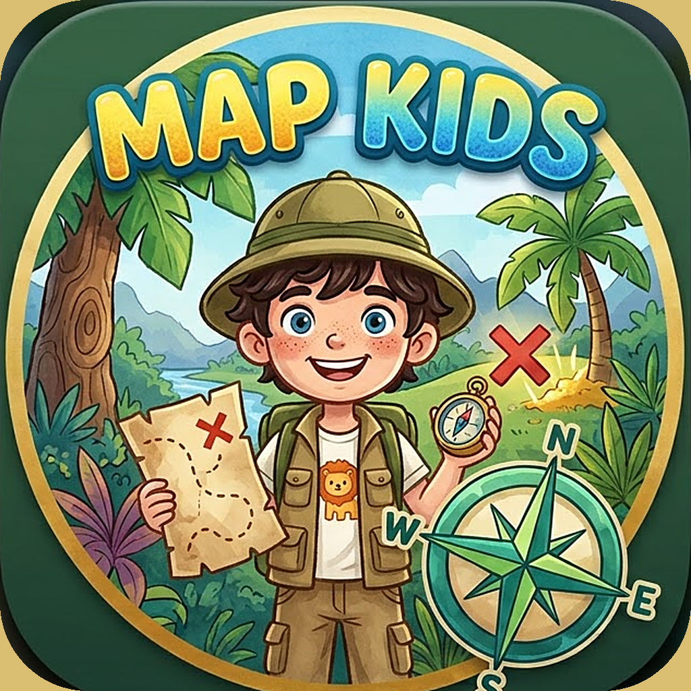

Map Kids: Treasure Island · Harita Çocukları: Hazine Adası
Bilmeceyi çöz, haritayı takip et, hazineyi bul! Çocuklar için 3B ada macerası.
Read the riddle, follow the map, find the treasure! A 3D island adventure for kids.
Destek / Support
meyadegamesstudio@gmail.com
SSS / FAQ
Satın aldığım paket görünmüyor. Adalar ekranında "Satın Alımları Geri Yükle"ye dokunun.
My purchase is missing. Tap "Restore Purchases" on the islands screen.
Gizlilik Politikası / Privacy Policy
© 2026 Meyade Games